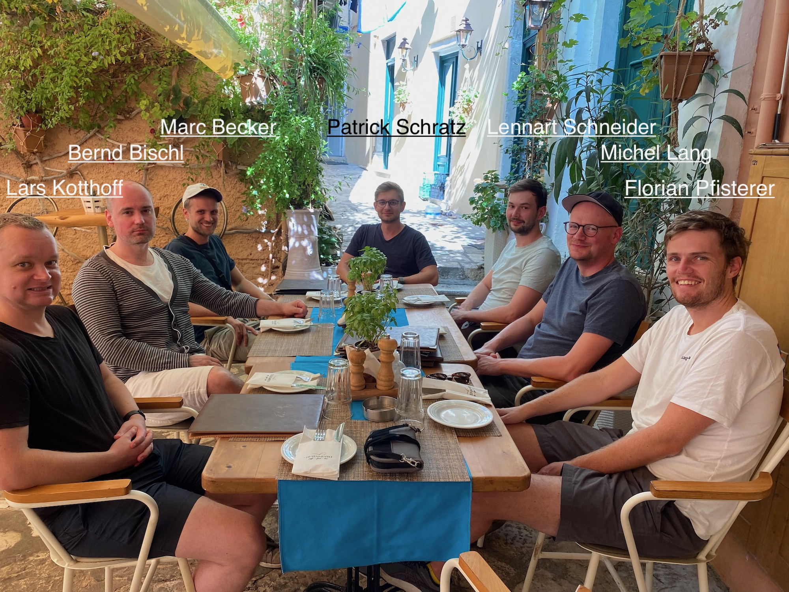
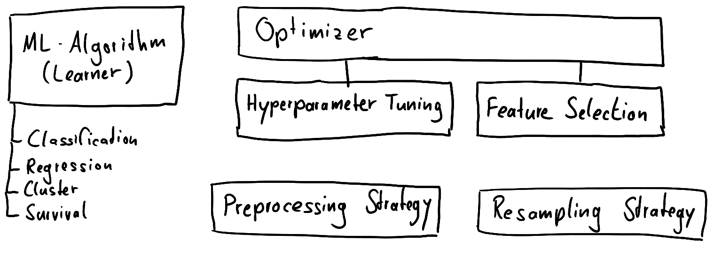
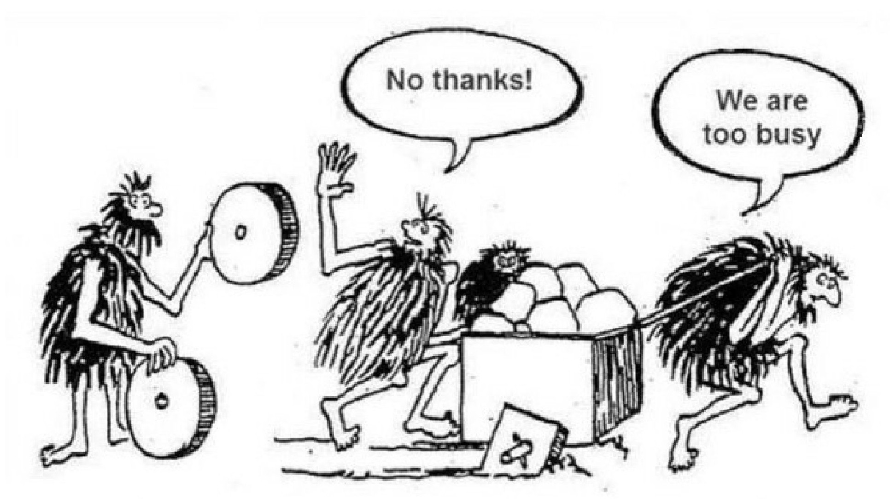
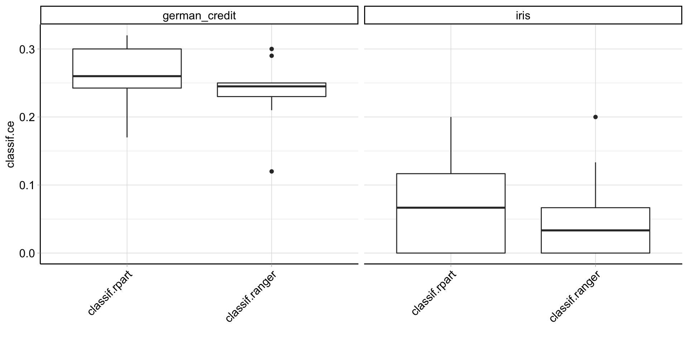
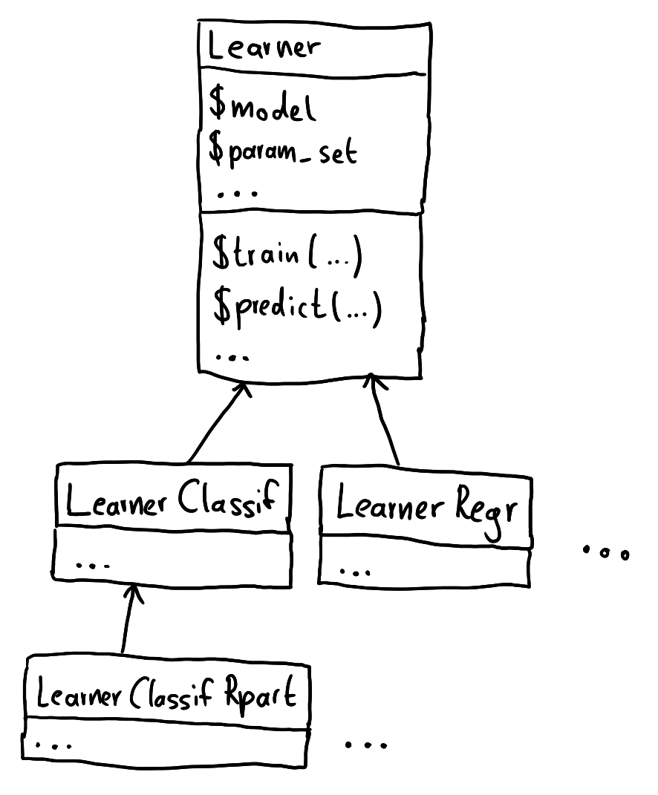
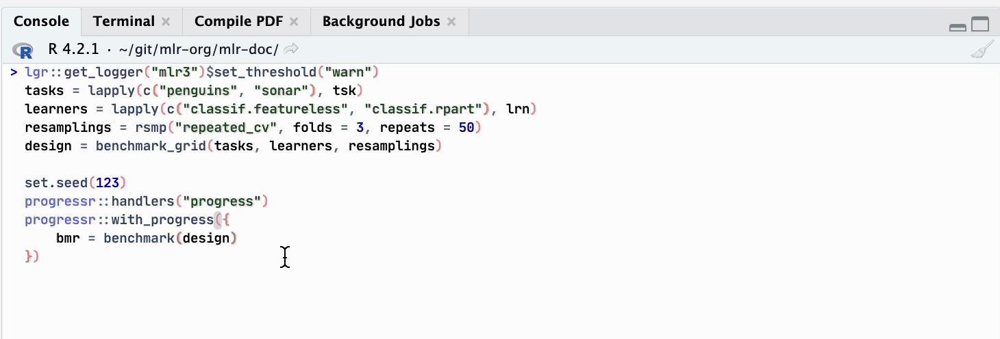
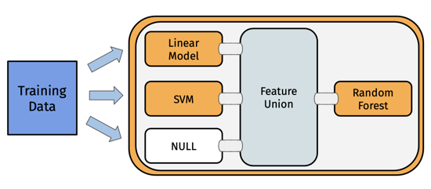

Machine learning with {mlr3}
An introduction
Patrick Schratz
2022-09-01
About me
PhD (candidate) Geoinformatics
Former research fellow at University of Jena and LMU Munich
Now Devops/R consultant in Zurich, Switzerland
Unix & R enthusiast
Gitea (https://gitea.io) contributor
mlr-org core team
Professional work
Swiss-based R consulting company (Zurich), founded in 2018 - www.cynkra.com
10-15 people from various countries
Free and Open-Source (FOSS) philosophy
Meta information
Resources: https://github.com/mlr-org/opengeohub-summer-school-2022
usethis::use_course("mlr-org/opengeohub-summer-school-2022)
Block 1
Time: ~ 1h 15 min
- {mlr3} overview
- Building blocks
- Hands-on tutorial
Block 2
Time: ~ 45 min
- {mlr3} spatial extensions
- Hands-on tutorial
Block 3
Time: ~ 1h
- Use case example from Leandro Parente
The mlr-org team (meta)
- Originally created by Bernd Bischl (2012, {mlr} package)
- 2019: {mlr} {mlr3} @useR! in Toulouse
- Core team: 5 people, extended ~ 10 people (most are German)
- Supported by Chair of Statistical learning and Data Science (LMU Munich) with two research engineers
- Scientific leads: Bernd Bischl & Michel Lang
The mlr-org team
Missing: Martin Binder, Sebastian Fischer, Damir Pulatov, Jakob Richter, Raphael Sonabend

(1) {mlr3} overview
Why use mlr3
Users want to efficiently train/predict/benchmark
many methods
on many datasets
using different tuning methods
using different feature selection methods
preferably using the same syntax
Design principles of {mlr3}
Why do we need a framework?
The problem: Many different ways to define features, data, hyperparameters, …
R6 – All you need to know
mlr3 uses the R6 class system. R6 in a nutshell:
Objects are created using <Class>$new() (or using the )
Building blocks overview

Motivation: Make benchmarking easy!
Interfaces to train and predict methods,
Interfaces to learner hyperparameters and optimizers (tuning),
Feature selection
Resampling (performance estimation),
Preprocessing independently from the data,
Parallelization, and
Error handling
Is it worth to “learn” mlr3?

You decide!
Is it worth to “learn” mlr3?
Reduce mistakes by relying on tested functionality
- Predefined meaningful performance measures
- Various resampling strategies
- Selected suite of default learners ({mlr3learners})
- Extensions for niche field modeling (survival, spatial, cluster, etc.)
Easily scale up your benchmark matrix
- Integrated parallelization
- Benchmarking helpers
{mlr3} in a nutshell
library("mlr3verse", quietly = TRUE)
lgr::get_logger("mlr3")$set_threshold("warn")
set.seed(42)
# example tasks
tasks = tsks(c("iris", "german_credit"))
# from {mlr3learners}
learners = lrns(c("classif.rpart", "classif.ranger"))
# create a benchmark matrix
# incl. cross-validation
bmg = benchmark_grid(
tasks, learners, rsmp("cv")
)
# execute
bmr = benchmark(bmg)
# visualize by classification error
autoplot(bmr, measure = msr("classif.ce"))
(2) Principles of mlr3
Principles of mlr3
Overcome limitations of S3 with the help of {R6}
- Truly object-oriented: data and methods live in the same object
- Make use of inheritance
- Make slight use of reference semantics

Principles of mlr3
Embrace {data.table}
- Fast operations for tabular data
- List columns to arrange complex objects in tabular structure
Be light on dependencies
- {R6}, {data.table}, {lgr}, {future}
- some of our own (helper) packages ({backports}, {checkmate})
- Additional packages are loaded from {mlr3} extension libraries
The mlr3verse

(3) Building blocks
Overview building blocks
Meta
- Learner
- Task
Apply
- Preprocessing (pipelines)
- Tuning
- Feature selection
- Benchmarking/Resampling (performance evaluation)
- Visualization
(4) General modeling approach
General modeling approach
Train (+tune) & Predict
- Train on all data points
- Predict to “new” data (i.e. without response) unknown performance
model$train()model$predict()
Result: “final” model & “final” predictions
Performance evaluation
- Split initial data into train/test via resampling methods
resample(): Train (+tune) multiple times via (one model, one task)benchmark(): Train (+tune) multiple times via (multiple models, multiple tasks)
(5) (Nested) Resampling
(Nested) Resampling

(6) Essential functions
Essential functions - object creation
| Name | Function |
|---|---|
tsk(), tsks() |
Create one or more tasks |
lrn(), lrns() |
Create one or more learners |
msr(), msrs() |
Create one or more measures |
rsmp(), rsmps() |
Create one or more resampling strategies |
tnr(), tnrs() |
Create one or more tuning strategies |
Tip
Calling these without arguments returns their respective dictionaries!
Essential functions - learners dictionary
key label task_type
1: classif.AdaBoostM1 Adaptive Boosting classif
2: classif.C50 Tree-based Model classif
3: classif.IBk Nearest Neighbour classif
4: classif.J48 Tree-based Model classif
5: classif.JRip Propositional Rule Learner. classif
6: classif.LMT Tree-based Model classif
7: classif.OneR One Rule classif
8: classif.PART Tree-based Model classif
9: classif.bart Bayesian Additive Regression Trees classif
10: classif.catboost Gradient Boosting classif
11: classif.cforest Conditional Random Forest classif
12: classif.ctree Conditional Inference Tree classif
13: classif.cv_glmnet <NA> classif
14: classif.debug Debug Learner for Classification classif
15: classif.earth Multivariate Adaptive Splines classif
---
116: surv.gamboost Boosted Generalized Additive Model surv
117: surv.gbm Gradient Boosting surv
118: surv.glmboost Boosted Generalized Linear Model surv
119: surv.glmnet Regularized Generalized Linear Model surv
120: surv.loghaz Logistic-Hazard Learner surv
121: surv.mboost Boosted Generalized Additive Model surv
122: surv.nelson Nelson-Aalen Estimator surv
123: surv.obliqueRSF Oblique Random Forest surv
124: surv.parametric Fully Parametric Learner surv
125: surv.pchazard PC-Hazard Learner surv
126: surv.penalized Penalized Regression surv
127: surv.ranger Random Forest surv
128: surv.rfsrc Random Forest surv
129: surv.svm Support Vector Machine surv
130: surv.xgboost Gradient Boosting survEssential functions - execution
| Name | Function |
|---|---|
$train() |
(R6 method) Train a learner on a task |
$predict(), $predict_newdata() |
(R6 method) Predict model on task data OR external data |
resample() |
Performance est. for a single learner |
benchmark() |
Performance est. for multiple learners & tasks |
autoplot() |
Visualization of *Result objects |
Multiple ResampleResult objects can be converted into a BenchmarkResult object via as_benchmark_result()
(7) Beyond “simple” data
Beyond “simple” data
Problem: Many modeling challenges require additional effort beyond numeric and categorical data. This applies to both target and feature variables.
- Clustered data
- Functional data
- Ordinal data
- Spatial data
- Survival data
- Temporal data
And what about…
- GPU training
- Multiple targets
The mlr3verse
Continuous development and improvements
(8) Parallelization & Ensembles
Parallelization & Ensembles
After your first ML pipeline you usually want to make the next step:
Try more learners on the same data
Extend your tuning budget
Create ensemble models (i.e. fusioning model predictions)
Parallelization: {future}
Ensembles: {mlr3pipelines} via Graphs
Parallelization
Sequential
<ResampleResult> of 20 iterations
* Task: spam
* Learner: classif.ranger
* Warnings: 0 in 0 iterations
* Errors: 0 in 0 iterationsTime difference of 27.76888 secsParallel (2 cores)
<ResampleResult> of 20 iterations
* Task: spam
* Learner: classif.ranger
* Warnings: 0 in 0 iterations
* Errors: 0 in 0 iterationsTime difference of 18.51609 secsParallelization - Important remarks 👇️
{mlr3} automatically parallizes tasks that can be parallelized when defining a future plan Calling these without arguments returns their respective dictionaries!
Parallelization comes with overhead: splitting and collecting results. For tasks < 10s, sequential runs are faster.
Implicit parallelization of learners is turned off by default in {mlr3} to avoid conflicts with {future} and duplicate parallelization.
Encapsulation
- Spawns a separate R process to train the learner
- Learner may segfault without tearing down the session
- Logs are captured
- Possibilty to have a fallback to create predictions
Progress bars
# create benchmark
tasks = lapply(c("penguins", "sonar"), tsk)
learners = lapply(c("classif.featureless", "classif.rpart"), lrn)
resamplings = rsmp("repeated_cv", folds = 3, repeats = 50)
design = benchmark_grid(tasks, learners, resamplings)
progressr::handlers("progress")
progressr::with_progress({
bmr = benchmark(design)
})
(9) Model optimization
Model optimization
Motivation
Tuning
Search for optimal hyperparameter configurations on the given data best performance
Feature selection
Reduce model complexity and feature count
Tuning - considerations
- Tuning space: Hyperparameter ranges to optimize
- Tuning strategy/method: How to optimize hyperparameters
- Tuning budget: time-based, iteration-based, performance-based
{mlr3} provides many (advanced) tuning strategies
Tuning - {mlr3} approaches
Standalone via tune() on task + learner + tuning strategy
Encapsulated in a benchmark by creating an “AutoTuner”, i.e. a learner which tunes itself when calling $train()
Tuning - {mlr3} approaches
<AutoTuner:classif.rpart.tuned>
* Model: list
* Search Space:
<ParamSet>
id class lower upper nlevels default value
1: cp ParamDbl -9.21034 -2.302585 Inf <NoDefault[3]>
Trafo is set.
* Packages: mlr3, mlr3tuning, rpart
* Predict Type: response
* Feature Types: logical, integer, numeric, factor, ordered
* Properties: importance, missings, multiclass, selected_features,
twoclass, weightsEnsemble models
Motivation: Instead of using one model for prediction, use multiple ones
Ensemble types:
- Bagging: averaging (regression) or majority vote (classification)
- Model stacking: use predictions from one model as features for a subsequent model
- Multilevel stacking: multiple levels of stacking with different models
Supported via {mlr3pipelines} - Ensemble models - mlr3book link
Ensemble models
Stacking example
# only the (Graph) learner object is constructed - nothing is computed here
graph_stack = gunion(list(
po("learner_cv", learner = lrn("regr.lm")),
po("learner_cv", learner = lrn("regr.svm")),
po("nop")
)) %>>%
po("featureunion") %>>%
lrn("regr.ranger")
# Trigger training of ensemble on task
graph_stack$train(tsk("mtcars"))
(10) Workflow & execution
mlr3 - workflow & execution
Users can use different approaches to structure their and streamline their workflows:
Script everything in subsequent steps
Use {mlr3pipelines} and a GraphLearner
Use external workflow packages like {targets} 1
What that all?
- Data preprocessing
- Error handling (fallback learners)
- Database backends
- Survival learning, feature selection, geospatial methods
- Model interpretation (interpretable machine learning)
- …
mlr3book
mlr3gallery
Resources
| Name | Purpose | URL |
|---|---|---|
| mlr3book | Main reference | https://mlr3book.mlr-org.com |
| mlr-org website | Website | https://mlr-org.com |
| mlr3gallery | Use cases | https://mlr-org.com/gallery |
| mlr3cheatsheets | Cheatsheets | https://cheatsheets.mlr-org.com/ |
Community support on GitHub & Stackoverflow (#mlr3) & Mattermost
Meta information
Block 1
Time: ~ 1h 15min
mlr3 overviewBuilding blocks- Hands-on tutorial
Block 2
Time: ~ 45 min
- {mlr3} spatial extensions
- Hands-on tutorial
Block 3
Time: ~ 1h
- Use case example from Leandro Parente
And now… 5 minutes break and then 🐶️